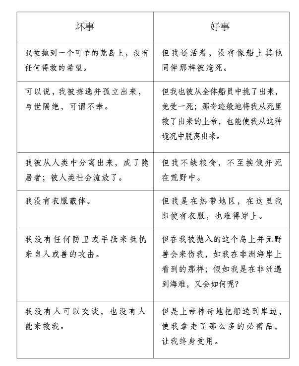

我醒来时，天已大亮，天气清朗，风暴止息，海洋不再如前般怒色澎湃。但是最令我惊异的是，那只在沙地里搁浅的船在夜里因涨潮而漂浮，被冲得远远的，到了我前面提到的那块岩石那里，就是我抱着它被大浪撞伤了的那块岩石。船离我所在的岸边不到一英里地，直挺挺地杵在那儿。我希望自己能登上甲板，至少可以抢救些必需品为我所用。
当我从树上的窝里爬下来，再次环顾四周时，发现的第一个东西是小艇，它被风浪掀翻了，现在躺在沙地上，就在我右手边两英里远的地方。我沿着海岸一路走去想够到它，但发现在我和它之间隔着一泓海湾，约有半英里宽。因此我又折了回来，我更想爬上大船，希望能找到一些东西满足我目前生存之所需。
午后不久，海面十分平静，浪潮远远退去，我可以走到离船约四分之一英里之处。在这里，我不禁悲从中来，因为我清清楚楚地看到，假如我们当初待在船上，便都能平安无事 — 就是说，我们全都可以安然上岸，我也不必为了像现在这样孤苦伶仃、孤立无援而如此悲恸。想到这点我不禁潸然泪下。但是，因为这于事无补，我便决定，只要可能，就爬上船去。因此我就扯下衣服 — 因为天气极其炎热 — 涉入水中。但当我临到船边时，困难却更大了，不知道怎样才能登上甲板。因为，船搁浅在那儿，高出水面，我伸手所及抓不到任何东西。我围着船游了两圈，第二圈时我捞到了一小截绳子，我奇怪在游第一圈时怎么没有发现它。它挂在船头，低低垂下，我费了好大的力气才抓住它，在它的帮助下我爬进了船的前舱。我发现底舱已漏，船里尽是水，但由于它搁浅在一片坚硬的沙滩或不如说陆地上，船尾翘起在沙岸上，船头低垂，几乎都浸在海水里。这样，它的后半侧便没有进水，都是干燥的。你可以想到，我的第一件事就是搜寻并查看哪些东西已受损，哪些东西还是好好的。首先，我发现船上的食物都是干的，还没有被水浸过，完全可以吃。我走进面包房，往口袋里装满了饼干，我边找别的东西边吃饼干，因为我没有时间可以浪费。我在大舱里发现了一些甘蔗酒，我喝了一大杯，我还真的需要喝多点来提提神，以直面眼前的一切。现在，我只想要一只小艇，用来运载将对我十分必要的许多东西。
呆坐在这儿盼望着够不着的东西，那是枉然的。我所处的绝境激发了我动手的念头。我们船上有几根备用的帆杠，还有两三块大木板，以及一两根多余的中桅，我决定由此着手。只要搬得动的，我都抛下船去。在把这些木头抛下船之前，我先用绳子把它们捆好，以免它们被水冲走。做完这些后，我下到船边，把它们拉向我，又把这四根木头捆在一起，两头尽可能扎紧，扎成一只木筏的样子，再在上面横放了两三块短木板，我上去走了走，还不错，但它不能够吃重，木块还是太轻了。于是我又动手，用一把木匠的锯子将一根多余的中桅一锯为三，将它们加固到木筏上。这工作颇为费劲，但我因急于要装备自己的必需品，也就干了下来，远远超出了平时我的能力。
木筏现在足以承载相当的重量了。我的下一个关注点是要装些什么，怎么才能保住它们，不被浪头打湿。不久我就想出了办法。我先是把我能拿到的厚木板薄木板都铺在筏上，认真想了下我最需要的东西是什么。我拿来三只海员用的箱子，我把它们打开并倒空，然后放低了吊到筏子上。第一个箱子里我放满了食物，有面包、大米、三块荷兰芝士、五片干羊肉（我们主要赖以为生） ，以及一点剩下的欧洲谷物，它们本是用来喂养我们带到海上的家禽的，但是那些家禽都被宰掉了。还有一些大麦和小麦，但是令我非常失望的是，它们都被老鼠啃光或糟蹋了。对于酒类，我发现了属于船长的几箱，里面有一些烈性酒，还有五六加仑椰子酒。我把酒直接放在筏子上，因为没有必要把它们放在箱子里，没有空间了。我在做这些事时，发现潮水开始涨起来，尽管还很平稳。我看着自己留在岸边沙滩上的外衣、衬衫、背心已全部漂走，好不狼狈，因为我游水上船时，只穿了一条及膝的亚麻裤子和一双袜子。不过，这却逼着我去搜索一些衣服，船里衣服够多的，但是我只挑了些现在要穿的，因为我眼里还有别的东西急需找到，尤其是岸上干活的工具。我找了很久，才找到了木匠的箱子，这对于我真是一大奖品，非常有用，在那时比一整船的金子都要值钱。我把它原原本本地搬到筏子上，也不费时打开看一眼，因为我大体知道里面装了些什么东西。
我的下一个关注点是弹药和武器。大舱里有两支很好的鸟枪和两把手枪。我先把它们拿了来，顺带拿了几只装火药的角筒，一小包子弹和两把老旧的生了锈的剑。我知道船上有三桶火药，但不清楚我们的炮手把它们藏哪儿去了。但我一番好找后终于找到了它们，两桶还是干的，保存良好，第三桶却是进了水。我把两桶好的跟武器都放到了筏子上。现在，我觉得东西已经装得够满了，开始思忖在既没有帆也没有桨和舵的情况下，怎么才能把它们运到岸上去。即使是最轻的一阵风也能够让我所有的航行全部落空。
有三件鼓舞我的事情：第一，海面平静安稳；第二，正在涨潮，水向岸边涌去；第三，微风拂面，吹向陆地。这样，我找到了原属于小艇的两三支断桨，还在箱子里的工具之外，找到了两把锯子、一把斧子和一个锤子。带着这些货物，我就从海里向岸上驶去。最初一英里左右筏子走得很顺当，只是有一点点偏离我昨天着陆的地方。我由此察觉到那里有一股水流直向岸边流去，于是就希望在那里发现一条小溪或河流，我可以用来作为港口，登岸卸货。
正如我的想象，确实有一个港湾。在我面前展开了一个小小的陆地开口，我发现有一股强劲的潮水正向它涌去。我就尽量把筏子导向那里，让它漂在潮水中间。
但是在这里，我又差点遭受了第二次沉船，倘若这事发生了，那我可真要心碎了。由于我对岸边的情况一无所知，木筏的一头搁浅在了沙滩上，而另一头却没有搁浅，只差一点点，木筏上的货物就会滑向漂在水里的那一头而沉到海里了。我竭尽全力，背部死劲顶着那几个箱子，让他们保持原位，但即使使出了洪荒之力也不能撑开木筏。我只能保持原有的姿势，一动也不敢动，尽全力抓牢箱子。我就这样站了半个小时，在这段时间里海水上涨，木筏浮起了一点。过了一会儿，水仍在上涨，木筏又重新漂浮了起来，我用桨把木筏向小溪入海口撑去，我顺流而上，终于发现自己来到了小溪的河口。小溪两边都是岸，一股强劲的潮水正在奔涌。我向两岸打量，以寻找一个适当的地方上岸，因为我不愿在小溪中驶得太远，我希望及早看到海上的船只，因此就决定尽量在靠近海岸的地方落脚。
一番周折之后，我在小溪的右岸探得了一个小湾，便克服千难万险，将木筏导向那里，我用桨抵着河底，最后离小湾近得可以直接冲进去了。但在这里，我又一次差点把货物全都滑进了海里。因为那处海岸相当陡峭— 就是说坡度很大— 没有地方可以着陆。如果让木筏一端靠岸，就会一头翘得太高，而另一头沉得太低，便会像上次那样让货物陷入危险之中。我所能做的只能是等待潮水涨得再高一点。我把桨当作锚来用，让筏子的一端抵着河岸，靠近一片平地。我希望潮水能流过这片平地。潮水果真流过来了。我一发现水位够了— 我的木筏吃水约一英尺— 就把木筏撑到那块平地上，把两支坏桨插进平地里，一头一尾地把木筏固定住了。就这样，我静静地停在那里等着退潮，将木筏和货物安全地留在岸上。
我接下来的工作是考察四周情况，寻找一个适合居住的地方，把我的东西安置好，以保证其免遭意外。我对自己身在何处一无所知，是在大洲上还是在一个岛屿上，是无人区还是有人区，是处在野兽环伺之中还是并非如此，通通都不清楚。离我一英里外有一座山，陡峭而高峻，高过了它北边其余的山丘。这些山丘构成了一道山脉。我拿出了一支鸟枪，一支手枪，一角筒的火药，如此这般把自己武装好后，就爬到那座山峰的顶端去俯瞰四周的情况。当我费尽周折、克服险阻爬到顶峰后，我看到了自己的命运，不禁万分悲恸。原来，我是到了一个四面环海的岛屿，除了一些岩石外根本看不到陆地，而且这些岩石还离得很远。西边三里格外有两座小岛，都要比这座小一点。
我还发现，我所在的岛屿一片荒芜，我有理由相信，这里荒无一人，只有野兽纵横，但是连野兽我也没有看到一只。至于野禽我倒是看到不少，却不知其种类为何。我即便猎杀野禽，也不知哪种可以当作食物，哪种不可以。我在返回的路上射下了一只大鸟，当时它正栖在一片大树林的一棵大树上。这一声枪响，我估计是这里受造以来的第一次。我刚放了一枪，便听到从林子的各个角落飞起数不胜数的飞禽，种类繁多，它们都叫着自己的调子，混合成一片呼号聒噪，每一种叫声我都闻所未闻。至于被我射下的那只造物，我觉得是一种老鹰，它的毛色和喙看起来像，但爪子却长得和普通的鸟一个样。它的肉酸腐难吃，并无用处。
我对这次的发现感到满意，就回到了筏子那里，动手把货物搬上岸来，这把那天剩下的时间都花掉了。我不知道晚上该如何应付过去，也不知道该在哪里歇息，因为我害怕躺在地面上，不知道会有什么野兽把我吞掉。后来我才发现，其实没有必要为此担心。
不过，我还是尽我所能，用搬到岸上的箱子和木板把自己围了起来，搭了一个像木屋样的住所，以便晚上歇息。至于食物，我还是看不出能拿什么法子喂饱自己，只是看到过两三只类似兔子的东西从我打鸟的林子里跑出来过。
我现在开始考虑，我也许还可以从大船上拿来很多有用的东西，尤其是绳索、帆布这类东西，可以把它们搬上岸来。我决定只要可能，就再上一次大船。我清楚，如果再来一次风暴，它就会变成碎片，我决定把其他的事都放下，先将船上能拿的东西通通拿来。我在心里琢磨，是否要撑着木筏去，但看起来没有可行性，因此我就决定趁退潮时像上次那样上船。我确实也这样做了，只不过这次是在离开小屋前脱掉了衣服，除了一件方格衬衫、一条短裤和一双薄底鞋外，什么也没有穿。
我像上次一样上了船，准备第二只木筏。由于有了第一次的经验，木筏造起来就没有那么笨重，货物装起来也没那么辛苦，却带回了几件非常有用的东西。首先，在木匠的储藏室里我找到了满满两三包钉子和螺丝钉，一把大钳子，一两打小斧头，这些东西中最有用的是一个磨刀砂轮。这些东西我都安放在一起，再放上些属于炮手的东西，特别是两三只铁钩，两桶枪弹，七把短枪，一支鸟枪，还有一小堆火药，一大袋小子弹，一大卷铅板。最后这一件实在太沉了，我没法把它提起来抬到船边。
除了这些东西，我还拿走了所有我能找到的人的衣服，一个备用的前桅中帆，一个吊床和一些被褥。我把这些东西都放在了这第二条木筏上，把它们安全地运到了岸上，真是令我十分欣慰。
在我离岸期间，我担心我留在岸上的食物会被野兽吃掉，但当我返回时，并没有看到任何来访者的迹象，只是在箱子上坐着一只看上去像是野猫的动物，它一看到我走近它，就跑开一段距离，然后静止不动，很镇定地坐在那里，泰然自若，直瞪瞪地看着我的脸，仿佛是想要跟我结识似的。我用枪对着它，但它既然不知道枪的厉害，也就完全无视，它也根本没有要跑开的意思。我朝它丢了一块饼干。顺便说一句，我手头并不宽裕，贮粮不多，但还是分给了它一块。它凑近过去，嗅了嗅，吃掉了饼干，并望着我（像在乞求） 要我再给一块；但我谢绝了它，不能再给了，于是它就走开了。
第二批货上岸后，尽管我想先把火药桶打开，分成小包，因为火药桶太大太沉，但我还是先动手用帆布做了一个小帐篷，为了支起小帐篷又砍出了几根支杆。我把那些经不起日晒雨淋的东西放在帐篷里，再把空箱子和空桶围在帐篷周围以加固它，防止野人或野兽的突然袭击。
我做完这些事后，就用几块木板从里面把帐篷门堵住，门外再竖上一个空箱子。我在地上支起了一张床，脑袋边放了两把手枪，床边再放上一支长枪，这样，我登岛以后总算第一次躺到了床上，整个夜晚都睡得很安静，因为我真是累坏了，白天睡得太少，整天都在辛辛苦苦地把所有这些东西从船上搬到岸上。
我相信，对于一个人来说，我现在拥有的所有种类的库存堪称空前了。但我仍然不满足，因为只要船还是直挺挺杵在那儿，我就会认为应该把它里面的东西都尽我所能地搬出来。所以每天退潮时我都会走到甲板上，拿走这个或那个东西。尤其是在第三次，我尽量拿走了索具，以及能找到的细绳和麻线，还有一块备用的帆布，它本是用来修补风帆的，连那桶浸了水的火药我也拿走了。总之，我拿走了所有的帆，从头到尾一片不剩，我得把它们裁成碎片，一次尽可能多带一点，因为现在对我来说帆没有多大用处，帆布才有用处。
但使我更得宽慰的是，在我这样跑了五六次，以为船上再没有什么值得我翻检的东西之后，却意外地发现了一大桶面包、三桶甘蔗酒、一箱砂糖和一桶精面粉。这令我颇为惊讶，因为我已不再指望能找到食物了，以为都被水浸泡过了。我迅速地倒空了那一大桶面包，把它们用我裁好的帆布捆成一包包的，总而言之全都平安地运到了岸上。
第二天，我又到船上跑了一次，这次把它搜了个里里外外底朝天，带走了一切可拿可搬的东西。我先从锚索开始，我把大索砍成许多截，这样就搬得动了。我把两条锚索和一根铁缆以及我能拿下的铁器都运到了岸上。我砍下了船上的前帆杠和后帆杠，以及一切我能砍下的东西，做了一只大木筏，我把所有这些重家伙都装在木筏上运走了。不过我的好运气现在开始离开我了。因为这只木筏操纵不便，载重又过多，当它驶进我原来卸货的小湾后，我不能如以前那般灵活地操控，结果它翻了，把我和货物都摔落到了水里。我自己倒没受大伤，因为我已靠近岸边；但货物的大部分却都丢了，尤其是我本指望着派上大用场的铁器。不过，在退潮时，我还是在沙滩上捡到了绝大部分锚索片断，还有一些铁器，尽管花了不少力气，因为我不得不潜到水里把它们挖出来，这活儿可不轻，把我累得够呛。这次之后，我每天都到船上去，把能拿的东西都拿了。
现在我到岸上已有十三天，到船上去已有十一趟，在这段时间里我已经带走了一双手所能够带走的一切。我确信，假如天气一直晴好，我可以将整条船一片一片地拆下去搬走。但在准备第十二次上船时，我发现起风了，不过我还是在潮低时登上了船。尽管我认为已把船舱搜了个遍，再也不会找到什么东西了，却还是发现了一个带有不少抽屉的柜子。在一个抽屉里面，我发现两三把剃刀、一把大剪刀、十几套上好的刀叉。在另一个抽屉里我发现了约值三十六英镑的货币，一些是欧洲硬币，一些是巴西硬币，一些是西班牙比索，有的是金币，有的是银币。
看到这些钱，我对自己笑着说：“噢，废物！”我大声说：“你们有什么用呢？你们对我毫无价值 — 不值得带到岸上。一把刀子就抵得上你们这一堆。我没办法花掉你们，你们就待在这儿吧，沉入海底吧，就跟那些不值一救的造物一般。”不过，我转头一想，我还是把这堆钱带走了，把它们都包在了一块帆布里面。我开始想着打造另一个木筏，但正当我着手准备时，发现天幕低垂，劲风吹起，不到一刻钟的时间，就变成了一股狂风从岸上刮来。我马上认识到，在岸风吹来时打造一只木筏是徒然无益的，我的任务只是在涨潮之前溜之大吉，否则根本就回不到岸上去。因此，我就潜入水中，游过大船与沙滩中间的那道水湾。我游得甚为吃力，部分是由于我带的东西太重，部分是由于水势较强。因为风刮得正急，潮还没有高涨，风暴却已来临。
但我回到了我的小帐篷家里，我躺在那里，我所有的财宝都环绕着我，十分安全。劲风吹了一夜，到了早上，我朝外一望，看哪，大船早已无影无踪！我有一点吃惊，但回头一想，就感到心满意足了，因为我没有浪费时间，也没有偷懒，把船上所有有用的东西都搬了过来。即使我还有时间去，船上也没什么可拿走的了。
我现在不再想大船了，也不想再拿点什么了，除非其残骸里有什么东西漂上岸来。后来也确实有些零碎漂过来，但那些东西都没多大用处。
我现在满门心思都用在怎么得到安全的保障，防御野人或野兽的问题上，假如岛上有野人或野兽的话。我想到了许多种对策，还有怎么造房子— 比如该不该挖个地穴，或在地上支个帐篷。总之，我决定两样都来。至于对策和房子，不妨在这里详细讲讲。
我很快就发现目前待的地方不适合定居，因为它处在一个低洼的沼泽地上，靠近大海，我相信这不利于健康，尤其还因为附近没有淡水。因此我决心找到一个健康点也方便点的地方。
我考虑了自己的处境，觉得有几件事是比较适合于我的：第一，健康和新鲜的淡水，正如上面所说；第二，房子能避开太阳的曝晒；第三，能保证安全，避开野兽或野人的攻击；第四，能够看到大海，倘若上帝派遣的船只出现在我的视野里，我就不会错过获救的良机，对此我是不会全然放弃盼望的。
在寻找满足这几个条件的地方时，我发现了一座突起的小山旁边有一块小平地，小山面对平地的这一侧陡峭如墙，因此不会有任何人或兽从山顶奔袭而来。在山岩的一边有一块稍稍凹进去的空地，好像一个洞穴的大门或入口，但实际上根本就没有洞穴或入口通到山岩里面。
我决定就在这块空地前面平坦的绿地上支起我的帐篷。这块平地的宽度不会大于一百码，长度是宽度的两倍，它横亘在我门前就像一块绿草地。在平地的尽头，地势不规则地下降，直延伸到海边的低地。这里处在小山的西北偏北一边，因此就避开了每天白天的毒日曝晒，当太阳转到西南方向照到这儿时，也接近日落了。
在我支起帐篷前，我在空地上划了一个半圆形，其半径离山岩约有十码，从半圆的起点到终点即直径是二十码。
沿着这个半圆，我插了两排结实的杆子，把它们钉到地下，直到它们像木桩一样牢牢地竖立，最大的一头伸出地面约五英尺半，顶上削得尖尖的。两排木桩之间的距离不会超过六英寸。
然后，我拿来从船上砍下的锚索片断，沿着半圆形将它们一段一段地缠绕在两排木桩上，一直堆到顶上，再把一些两英尺半高的杆子插进去，紧靠在木桩上，像柱子上的横条。这个篱笆是如此结实，以致无论是人还是野兽都没法走进来，也没法攀越过来。这可花了我不少的时间和精力，尤其是在树林里砍木桩，把它们拖到空地上，再钉到地下。
至于这地方的入口，我并没有做门，而是做了一架短梯，从篱笆顶上越过去，进去之后再挪开梯子。这样一来，我就觉得我四面都受到保护，尘嚣远隔，晚上可以高枕无忧了，否则我会彻夜难眠的。当然，从后来发生的事情来看，对我所担心的敌人，我根本用不着如此谨慎小心。
我花了无数的精力把我的财富，我所有的食品、武器和储备，一股脑地搬到了这个篱笆或堡垒里。我搭了一个大帐篷防雨，那里一年中有一段时间暴雨频密。我把帐篷做成了双重的，里面是一个小一点的帐篷，它上面罩了一个大一些的帐篷，大帐篷上再盖上一块柏油帆布。那是我从船帆里留下来的。
我也不再睡在当初带上岸的那张床上，而是睡在一张吊床上，这张吊床还真不错，它原本是属于船上大副的。
我把所有的食品，以及所有易于受潮的东西都搬进了这个帐篷。把所有的东西都搬进来后，我就把迄今为止一直敞开着的入口堵上了。此后就如我上面所说，我就用一把短梯进进出出。
我做完这些事后，就开始在岩壁上打洞，把挖出来的泥石从帐篷运到外面，沿着篱笆堆成一个土台，高出地面约有一英尺半。这样我就挖出了一个洞穴，就在帐篷后面，它的作用如同地窖。
我花了不少精力和时间做这些事，最后总算大功告成。现在，我再回过头来追述几件萦绕在我心头的事情。在我打算搭帐篷挖地洞的时候，乌云密布，暴雨倾注，一道闪电突然扯起，之后是自然而来的一声霹雳。一个念头像闪电一样迅速地冲进了我的脑海，使我比对闪电本身更吃惊：“啊，我的火药呀！”当我想到，一声霹雳就能令我的火药尽数炸毁，我的心就猛地下沉了。因为不仅我的防卫要靠它，我获得食物也完全要靠它。当时我只担心火药，而没有想到自己的安危，没有想到一旦火药爆炸，我连是谁害了我都不会知道呢！
这件事给我留下的印象是如此之深，以致暴雨过后我放下了一切的工作，包括盖房子和扎堡垒，转而去做包裹和盒子，把火药分开，把它们一点一点地装进小包，只希望万一有事，也不会同时着火爆炸。我把它们分得很开，使之不可能一包着火，就传到另一包。这个活我花了两个星期才干完，我把大约两百四十磅重的火药分成了不少于一百个小包。至于那桶浸湿了的火药，我不担心它有什么危险，于是就把它放在新挖的洞穴里面，这篱笆内的洞穴，我称之为厨房。至于剩下的火药，我则把它们藏在岩石里的各个小洞里，这样可以避免受潮。我在放置的地方都很小心地作了记号。
在做这件事的间隙，我每天都带着枪至少出门一次到周围转转，看能不能猎获点食物，再熟悉一下岛上有些什么物产。第一次外出，我便发现了岛上有山羊，这真是令我大大地满意。不过这也给我带来了烦恼，因为它们十分害羞，十分狡猾，跑起来还十分快，要走近它们成了世上最困难的事。但我也不为此感到沮丧，毫不怀疑我迟早总能打到一只的。这事不久就成真了。我发现它们常常出没的地方后，就在那里守株待羊。我观察到，当它们在山谷里发现我时，即使它们正在山岩上，也会恐惧地跑开。但是如果它们正在山谷里吃草，而我在山岩上时，它们就不会注意我。由此我总结出，由于它们两眼的位置，它们的视线只能向下直视，不容易看到在它们之上的物体。因此后来我就用了下面这个方法：总是先爬到山岩上，在它们上面，这样就常常一瞄一个准。我朝这些动物开了第一枪，打死了一只母山羊，她正在给她的一只小羊羔喂奶，这令我心里很难过。因为当母羊倒下时，羊羔仍旧静静地站在她身边，直到我走过去把母羊抬起来。还不只是这样。当我肩上扛着母羊回家时，羊羔也跟着我走，一直走到我的围篱前面。我放下母羊，把羊羔抱在双臂里，跨过篱笆，希望把它驯养起来。但它就是不吃东西，我只好把它也杀了吃了。这两只羊的肉供我吃了很长一段时间，因为我吃得很省。我要尽量节约粮食，尤其是面包。
安顿好住处后，我发现绝对还需要一个地方来生火烧柴。为此我做了些什么，我又是怎么扩挖我的洞穴，做了哪些方便措施，我会在适当的时候谈一谈。现在我先略微谈一谈我自己，以及我关于生活的想法，你不难猜出，我的想法是不会少的。
就我现在的处境，可以说前景黯淡。我被暴风雨驱赶到这座岛上，远离了我们原定的航行路线，远得有几百里格远，逸出了人类通常的贸易路线，对此，我有充足的理由视之为老天的旨意，在这座孤岛上，以这种与世隔绝的方式，了此残生。想到这些，我总是会满脸热泪。有时我会疑惑，为什么上帝会这样毁灭他的造物，使之如此悲惨，如此无助，如此地被抛弃，如此地全然沮丧，以致让人感谢这样的生活难以说得上是合理的呢？
但是总是有一些东西马上向我转身，审查这些念头，并且责备我。特别是有一天，当我手里拿着枪走在海边，正沉思着我目前的处境这个问题时，理智从另一方面劝诫我说：“是的，你陷入了与世隔绝的处境，这是真的。但是，请你记住，你们另外那些人呢？你们上船时不是有十一个人吗？那十个人呢？为什么他们没有得救，你没有丧命？为什么单单挑出了你？是在这里好呢还是在那里好呢？”然后我指了指大海。祸兮福之所倚，还有祸不单行，我本应该想到的。
然后我又想到，我有充足的粮食储备，要是大船没有从触礁的地方浮起来，如此地漂近海岸，使我有时间从它里面拿出一切东西，我还不知道会怎么样呢！（这可是十万分之一的概率啊！） 倘若我只是像我刚刚上岸时那样，没有任何生活必需品，没有什么设备和工具，我又会怎样呢？“尤其是，”我大声说（对我自己） ，“我如果没有枪，没有弹药，没有工具来从事制造和工作，没有衣服、被褥、帐篷或任何遮盖物，又会怎样呢？”现在，我充分地拥有所有这些东西，即使弹药用尽，不用枪，我也能够过上自给自足的生活了。因此，我对于自己的生存就有了一种宽宏的看法，只要我活着，就无所匮乏。因为我从一开始就考虑到，若是发生意外情况，我会怎么办，以后要怎么办，不仅是在弹药用尽之后，还是在健康和力气出现衰退之后。
我得承认，我并没有想到弹药会在轰然一声中尽数炸毁的情形，我是说火药被闪电击中。因此在电闪雷鸣中想到这一点时，这个念头吓了我一大跳。对此我前面说过了。
我现在就要与一种寂寞的生活忧郁地相伴了，这种生活是世界上闻所未闻的，而我将把它从头到尾地按顺序记录下来。据我估计，我是在9月30日那天，以前面所说的方式踏上了这个可怕的岛屿。那时太阳差不多正在我头顶，时间当在秋分。据我观察，地点当在北纬九度二十二分。
在岛上待了十天或十二天后，我忽然想到，缺乏书籍、笔和墨水，会让我失去时间的计量，甚至连哪天是安息日都会忘记。为了防止这种情况发生，我便用刀子在一根大柱子上用大写字母刻下：“1659年9月30日我在此处上岸。”我把柱子做成一个大十字架，竖在我第一次上岸的地方。
在这根方柱的四边上，我每天都用刀子刻上一道纹，每第七天就刻一道长一倍的纹，每个月第一天的纹则再长一倍。这样，我就有了一个日历，周、月、年都有了。
接下来，我要说一下，上面也提到过，我上过好几次船，拿了许多东西，有些价值不大，但颇有用处，这些我前面忘记交待了。尤其是笔、墨、纸，以及船长、大副、炮手和木匠保存过的几包东西，比如三四个罗盘、几个测量仪、刻度盘、望远镜、海图和航海书籍，所有这些我都归拢在一起，不管有用没用。我还找到了三本保存完好的圣经，是跟我的货物一道从英格兰运来的，我上船时把它们跟其他东西装在了行李里。还有一些葡萄牙文的书籍。里面有两三本天主教的祷告书，以及几本别的书，这些我都认认真真地保留了下来。我还忘不了船上曾有一条狗和两只猫，关于它们异乎寻常的历史，我会在适当的地方谈到。这两只猫是我带上岸的，至于那条狗，是在我把第一批货物运上岸的第二天，它自己跳出大船，游到我这边的。在许多年里它都是我忠诚的仆人。我什么都不缺，它不必为我猎取动物，也不必当我的同伴帮我干点什么事，我只求它能和我说说话，但这却办不到。如上所提，我找到了笔、墨和纸，但用得极省。我会向你们显示，只要墨水还有，我就会把一切都如实记录下来，但若墨水用尽，我就记不了了，因为我没有办法造出墨水来。
这使我想到，尽管我收集了许多东西，却还是缺少不少东西。墨水就是其中的一样。还缺少铲子、鹤嘴锄、铁锹来挖地或铲土，缺少针线和别针。至于内衣裤，虽然也缺乏，不久也就无所谓了。
缺乏工具使我工作吃力。我花了将近一年，才完全扎好我的小篱笆，或把居所围好。木杆或木桩沉得很，我只能选我搬得动的，在树林子里花很长时间砍下来削好，再花更长时间搬回家里。有时把一根树干砍好并搬回家要花两天的时间，第三天才能把它打到地里。为了把它打到地里，我先弄来了一根重木头，但后来想起自己还有一根铁棍，可是即使用铁棍，打桩这个工作还是非常吃力和辛苦的。
不过既然我有充足的时间去做，又何必在乎要做的事麻不麻烦呢？况且把那些事做完后，我也就无所事事了，至少我没有预见到还有什么事要做的。剩下的无非是在岛上到处走走看看，寻找食物，这是我每天都多多少少要做的事。
我现在开始严肃地思考起自己的处境以及所处的环境来，并把事态记录下来。我这么做并不是要把它们留给后来者看— 我不太可能会有后继者— 我不过是为了发泄一下每天堆积在心头的郁闷。当我的理智开始控制我的沮丧，我开始尽可能地安慰自己，我把好事坏事一一排列对比，看清楚了自己的情况还不是更糟的。我不偏不倚地把我所享受到的安慰和所遭受到的不幸列了出来，就像借方和贷方的表格一样：

总体来说，这无疑证明了，世界上罕有我这样的悲惨处境，但即使是在这样的处境中，也既有负面的东西，又有值得感恩的正面的东西。让这作为一种指示，使世人从世上最不幸的处境中得到些经验教训，那就是我们总是能从万般不幸中找到一些宽慰自己的事，然后在好坏的对照描述中，记入贷方这一栏。
对自己的处境我心里已稍觉宽慰，就不再眼巴巴地望着大海，指望看到船来— 我是说，我放弃了这样的事，开始努力安排自己的求生之道，尽可能地使事情变得容易。
我已描述过我的住所，那是一个山岩下的帐篷，周围有结实的木桩和锚索围绕。不过现在叫它围墙更加合适，因为我在篱笆外用草皮堆出了一堵墙，约有两英尺厚。隔了一段时间之后（我想是一年半吧） ，我又在墙和岩石之间搭了一些椽子，上面盖了一些树枝之类的东西以避雨。我发现一年之中总有一段时间雨会下得很猛。
我已说过我是怎么把所有的东西都搬到围篱里，搬到我在帐篷后挖的那个洞穴里的。现在我还要补充一下，那些东西起初都杂乱无序地堆在一起，占用了我所有的空间，让我没有地方转身，因此，我就开始扩挖地洞，向地下深入。好在岩石是一种松散的沙石，很容易挖掘。当我发现我已十分安全，可以避开野兽的抓捕时，我就向旁边挖去，向着右手边的岩石挖去，然后再次转向右边，直到把岩壁挖穿了。我做了一个门，通向围墙或堡垒的外面。
这使我不但有了出口和入口，作为我帐篷和贮藏室的后门，还让我有了空间来储藏东西。
现在，我开始致力于制作一些我发现急需的必需品，特别是桌子和椅子。没有这些东西，我是不能够享受世上最起码的乐趣的，我就既不能写作或吃饭，也不能做其他一些没有桌子就毫无乐趣的事了。因此我就开始动手了。这里我必须说明一下。由于理性是数学的实质和源头，所以，只要用理性去陈述和整合一切事情，对事情作出最理性的判断，每个人就可以或迟或早地掌握任何一门工艺。我一生从来没有使用过工具，但是，经过一段时间后，凭着劳动、应用和设计发明，我最后发现，我什么也不缺，什么都能做，有工具的话更是如此。即使没有工具我也能造出许多东西，有些只是用了锛和小斧头而已。也许没有人会用我的方法造东西，并且像我这样付出无尽的劳动。例如，如果我需要一块板子，我别无他法，只能砍倒一棵树，让它横在我面前，再用斧头把两面削平，削薄到成为一块木板的样子，然后再用锛把它刮得平滑。确实，用这种办法一棵树只能做一块板子，但我没有别的解决办法，只能付出耐心。我只有花费大量的时间和精力才能做出一块木板，但反正我的时间和精力也不值钱，因此怎么用都无所谓了。
如上所说，我首先打造了一张桌子和一把椅子，我使用的材料是我用筏子从大船上运回来的几块短木板。我用上面的方法做了一些板子后，就打造了一些大架子，宽度都是一英尺半，一层架着一层，沿着山洞排开，放置我所有的工具、钉子和铁器。总之，把事物归类存放，以方便取用。我在墙上钉了些小木钉，用来挂枪和一切可以挂的东西，这样一来，如果有人到我的山洞来参观，定会觉得它像一个总仓库，各种必需品应有尽有。这里的每件东西都很应手，看到所有的东西都井然有序，特别是发觉所有的必需品都如此充足，我真是愉快至极。
现在，我开始记日记了，把每天做的事都记下来。起初我太忙了，不仅忙于劳动，而且心绪纷乱。假使写日记，也会处处沉闷。比如，我必定会这样说：“9月30日。在我上岸并逃过了淹死的命运后，我并没有感谢上帝救了我，而是先呕吐，吐出大量灌进我肚里的咸水，稍微康复，在岸上跑来跑去，又是扭着手，又是拍着头和脸，为自己的不幸大叫大嚷，喊着说，‘我完蛋了，我完蛋了！’，直到精疲力尽，不得不躺在地上休息，却又不敢入睡，因为害怕被野兽吃掉。”
这之后的几天，在我上船把能搬的东西都搬走后，我还是忍不住爬到一座小山的顶峰，向海里望去，希望能看到船只经过。我妄想过头，产生了幻觉，看到远处有一片帆影，满心欢喜，然后定睛一看，看得眼都花了，却什么也没有看到。我坐下来大哭，跟一个孩子似的，用我的愚昧增加了我的痛苦。
但这些事情多多少少都过去了，我把住所和一切家什安置妥当了，打造了一桌一椅，一切都像模像样，我于是开始记日记了。我在这儿给你们尽量长地抄了一份（有些前面提到过的事会重复一下） 。后来由于没有墨水了，我不得不停止抄录了。